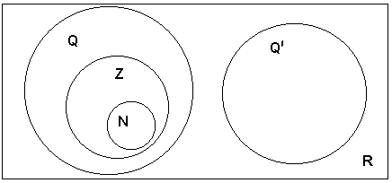

Matemática Superior
Imersão de Z em Q
Um erro muito comum, mesmo entre professores graduados, é pensar que o Conjunto dos Números Inteiros é um subconjunto dos racionais. Este vício tem suas raízes no curso ginasial(ensino fundamental) quando aprendemos por questões práticas a representação dada na figura abaixo.

Uma visão básica da relação entre os elementos de Z e Q está exposta no seminário "Imersão de Z em Q", que apresentei, com o colega Heverton, no mês de setembro do ano 2000, em cumprimento a disciplina Fundamentos de Matemática Elementar III do Curso de Matemática da Universidade Federal da Bahia, sob regência da Professora Maria Zita de Carvalho Braga.
Distância de Um Ponto a Uma Reta e Área de Um Triângulo
Este foi outro seminário apresentado por mim e por Heverton, desta vez em cumprimento a Disciplina Fundamentos de Matemática Elementar IV. Ele trata da demonstração da representação analítica da distância de um ponto a uma reta e da área de um triângulo.
Funções Analíticas
Acesse este link para obter exercícios sobre funções de uma variável complexa. Alguns destes exercícios são apenas exercícios sobre números complexos.
 Voltar
Voltar